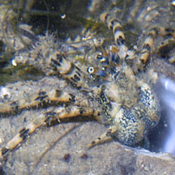
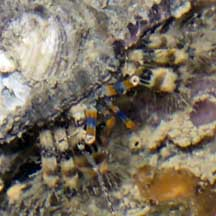
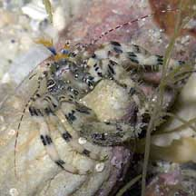
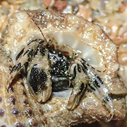

|
|
| hermit crabs text index | photo index |
| Phylum Arthropoda > Subphylum Crustacea > Class Malacostraca > Order Decapoda > Anomurans > hermit crabs |
| Banded hermit crab Pseudopaguristes monoporus* Family Diogenidae updated Jan 2020 Where seen? This little hermit crab is commonly seen on some of our shores, in coral rubble near the low water mark, sometimes on living corals and sea fans. Previously known as Paguristes monoporus. Features: Body about 1-1.5cm long, pale or yellowish with dark or bluish speckles in bands. Right pincer usually larger than the left. Legs sparsely hairy, with black bars in bands. Short antennae banded orange-bright blue with orange feathery tips. Eyestalks banded orange-bright blue-orange. Long antenna banded maroon or dark brown with white dots. |
|
 Pulau Sekudu, Aug 03 |
 Eye stalks banded blue and orange. Pulau Sekudu, Aug 05 |
 Right pincer larger. Sentosa, Jan 05 |
*Species are difficult to positively identify without close examination.
On this website, they are grouped by external features for convenience of display.
| Banded hermit crabs on Singapore shores |
On wildsingapore
flickr
|
| Other sightings on Singapore shores |
 Changi West, Sep 20 Photo shared by Vincent Choo on facebook. |